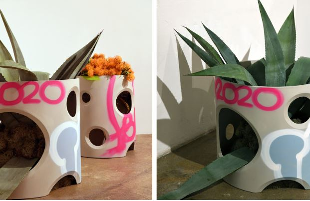
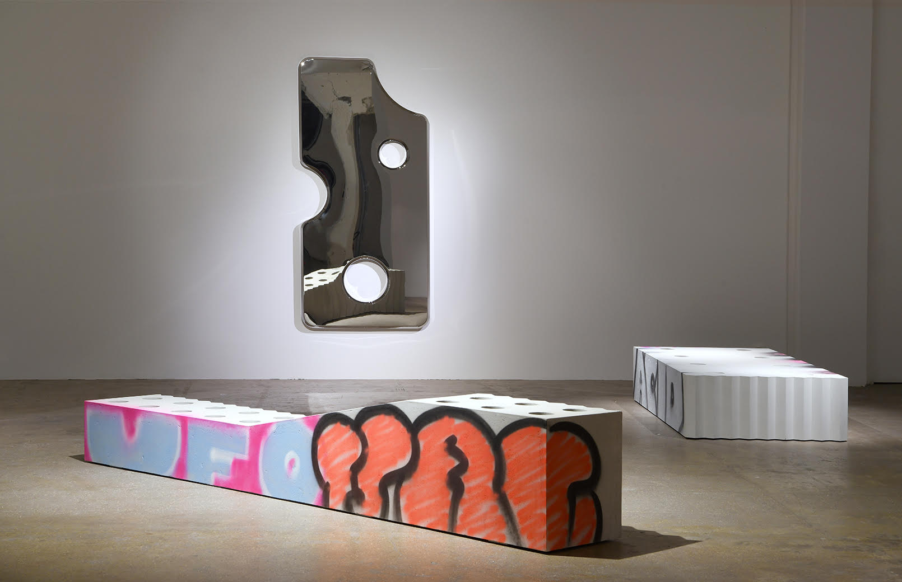

ART
Director Clara Krzentowski on Virgil Abloh’s Efflorescence Exhibition at Galerie Kreo
A conversation that takes a closer look at how the artist revolutionised gallery spaces
BY VANESA KRIZONYTE
“Efflorescence refers to the phenomenon where plants grow from the cracks of the walls or pavement.Virgil Abloh wanted to make concrete furniture that would remind us of this phenomenon and how nature sometimes takes over what is made by man.” – Clara Krzentowski
“Efflorescence”, Virgil Abloh, January 15-April 10,2020, Galerie Kreo, Paris. Photo credits: Galerie Kreo.
Virgil Abloh is often described as the modern Andy Warhol, the pioneer
of the link between art, fashion, and culture. Warhol understood the
inverse: that art and culture could be translated into a commodity
form called business art to make art more accessible. Possibly born
from Warhol’s expressions, the art market today is governed by
celebrity proximity, contributing an integral part to artwork’s
exposure. Since these spaces are centres of communicating and
distributing ideas, Abloh shared the same belief as Warhol that
celebrity presence can bring in a wider audience.
In conversation with Clara Krzentowski, director of Galerie Kreo, I
wanted to uncover if Virgil Abloh’s blurring of celebrity culture and
art in his Efflorescence 2019 exhibitions in Paris and London
contributed to audience diversification within the gallery.
Did Virgil Abloh’s exhibition bring a new audience into the gallery?
Clara: This exhibition achieved a record-breaking attendance for us; the gallery was constantly full from the day that the show opened to the day it ended. One of the things we loved most about that, and which felt most special, was the ability to connect with a new, and notably young audience - some of whom hadn't been in a museum or gallery space before. Virgil had the power to do that: take these 'white cube' environments, which can often appear intimidating or daunting to newcomers, and transform them into open spaces for conversation and meaningful dialogue.
Did these visitors truly engage with the artworks and what was the long-term influence when Virgil Abloh’s name was no longer attached to the upcoming exhibitions?
I think when one has a passion about art, or somebody's creative work, in this case Virgil, it already denotes a certain kind of open-mindedness, an openness to engage with new creative enterprises. The people who came to visit Virgil's show engaged deeply with the pieces, and we were pleased to reconnect with some of these visitors in subsequent shows at the gallery.
The return of visitors to Galerie Kreo shows Abloh’s capacity as a cultural communicator. The essence of his work in introducing the art environment and concepts to a fresh mindset is the long-awaited social change needed in the art world. But did people just attend for the celebrity culture?
It's true that the white cube space is often seen as an intimidating one, and that the art world, at times, may come across as overly highbrow. What sets Virgil's approach apart is his ability to break down these barriers. He successfully challenges the notion that exhibition spaces are exclusive and seemingly uninviting, creating instead an atmosphere of openness. This inclusiveness lies at the heart of his "EFFLORESCENCE" collection, where the concept revolves around bringing elements of the outdoors inside. For instance, the presence of a bench reminiscent of a skating bench indoors serves as a reminder of public spaces and streets, blurring the lines between the gallery and the everyday. Celebrity culture isn't something that ever transpired in the collection or the exhibition; everybody who came genuinely engaged with the content of what Virgil made.
“Efflorescence”, Virgil Abloh, January 15-April 10,2020, Galerie Kreo, Paris. Photo credits: Galerie Kreo.
And the beauty of Abloh’s shows was the absence of the Us and Them divide.
Did Galerie Kreo consider the criticism around Virgil Abloh’s practice of reproduction and appropriation?
The concept of reproduction and appropriation has a longstanding
presence in the world of art. Artists such as Andy Warhol and Marcel
Duchamp, whom Virgil Abloh referred to as his "lawyer," have employed
these techniques and created incredible work from it. The focus is not
on the imagery itself but rather on how it is used and the new meaning
it can convey in a fresh context.
In Virgil's case,
context plays a pivotal role, and the act of "sampling" or
incorporating existing imagery becomes an artistic statement. When
someone possesses such significant influence, there will inevitably be
detractors, but this was never a cause for concern for us. Virgil's
brilliance is unquestionable.
“Efflorescence”, Virgil Abloh, January 24-March 02 2020, Galerie Kreo, London.
Essentially, celebrity status is the way culture attains its value.
Through my journey in exploring Abloh’s work, it is visible that his
cultivation of a highly established personal image framed him in a
position of power and voice authority to diversify the arts. Visible
in the audience demographic changes at Galerie Kreo, it is safe to say
that Abloh’s circulation in the high realm of fashion whilst linking
to street style produced an aura the youth wanted to participate in
and thus entered Abloh’s exhibitions.
We must thank
Galerie Kreo for opening their space to Abloh’s vision and aiding this
necessary social change in diversifying the art industry.
The interview for this story was conducted on 29, Nov 2022. With
gratitude to Clara Krzentowski.
Link to exhibitions:
https://www.galeriekreo.com/en/exposition/124-efflorescence-virgil-abloh/
https://www.galeriekreo.com/en/exposition/125-efflorescence-virgil-abloh/